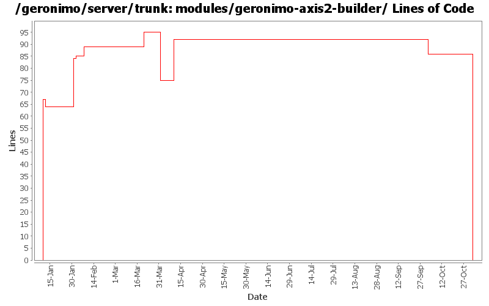

[root]/modules/geronimo-axis2-builder
 src
(0 files, 0 lines)
src
(0 files, 0 lines)
 main
(0 files, 0 lines)
main
(0 files, 0 lines)
 java
(0 files, 0 lines)
java
(0 files, 0 lines)
 org
(0 files, 0 lines)
org
(0 files, 0 lines)
 apache
(0 files, 0 lines)
apache
(0 files, 0 lines)
 geronimo
(0 files, 0 lines)
geronimo
(0 files, 0 lines)
 axis2
(0 files, 0 lines)
axis2
(0 files, 0 lines)
 builder
(0 files, 0 lines)
builder
(0 files, 0 lines)

| Author | Changes | Lines of Code | Lines per Change |
|---|---|---|---|
| Totals | 19 (100.0%) | 235 (100.0%) | 12.3 |
| dims | 9 (47.4%) | 194 (82.6%) | 21.5 |
| gawor | 3 (15.8%) | 21 (8.9%) | 7.0 |
| jdillon | 2 (10.5%) | 18 (7.7%) | 9.0 |
| prasad | 4 (21.1%) | 1 (0.4%) | 0.2 |
| hogstrom | 1 (5.3%) | 1 (0.4%) | 1.0 |
GERONIMO-3565. Modules distributed amongst framework/modules and plugins
0 lines of code changed in 3 files:
making axis2 intergration more modular: separated ejb bits from servlet bits.
1 lines of code changed in 1 file:
making cxf intergration more modular: separated ejb bits from servlet bits.
1 lines of code changed in 1 file:
* updated copyright date to 2007
1 lines of code changed in 1 file:
Changed trunk to 2.1-SNAPSHOT
1 lines of code changed in 1 file:
clean up
19 lines of code changed in 1 file:
Fix for GERONIMO-2988 - Axis2: needs to support optional wsdl file
17 lines of code changed in 1 file:
cleanup axis2 pom's
15 lines of code changed in 1 file:
r6719@Bliss: jason | 2007-03-20 01:43:32 -0700
Fix indent
14 lines of code changed in 1 file:
remove jaxb generated code, use the xmlbeans code generated from the j2ee 5 schema instead
5 lines of code changed in 1 file:
Fix for GERONIMO-2798 - Axis2 Integration - User JAXWS common module to implementation
5 lines of code changed in 1 file:
Clean up time :) get rid of m1 repo for axis2
2 lines of code changed in 1 file:
Fix for GERONIMO-2776 - Axis2 Integration - Replace RPCMessageReciever with JAXWSMessageReciever
83 lines of code changed in 1 file:
Use ${version} instead of ${pom.version} or ${geronimoVersion} for deps
Fixed some deps to use the DM config for their version, created missing DM for el spec
Drop duplicate annotation in DM
Using geronimo-jta_1.1_spec everywhere geronimo-jta_1.0.1B_spec was used before
Few comments on future version fixes that need to be made
Dropped some obvious copy-paste of pom scm and build elements which are uneeded
4 lines of code changed in 1 file:
initial skeletons for Axis2/Geronimo integration (GERONIMO-2717)
67 lines of code changed in 3 files: